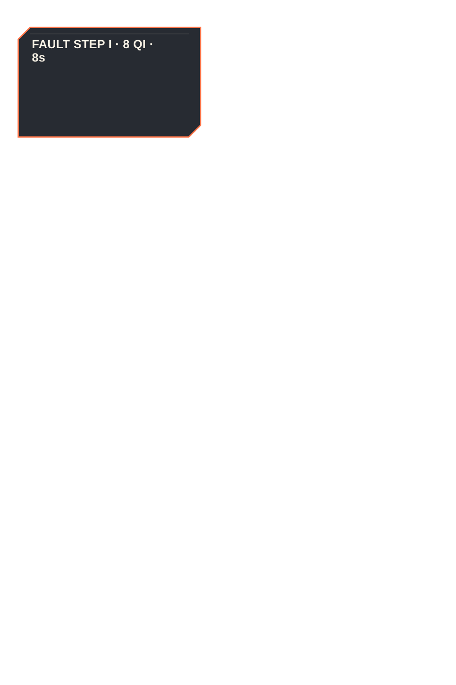
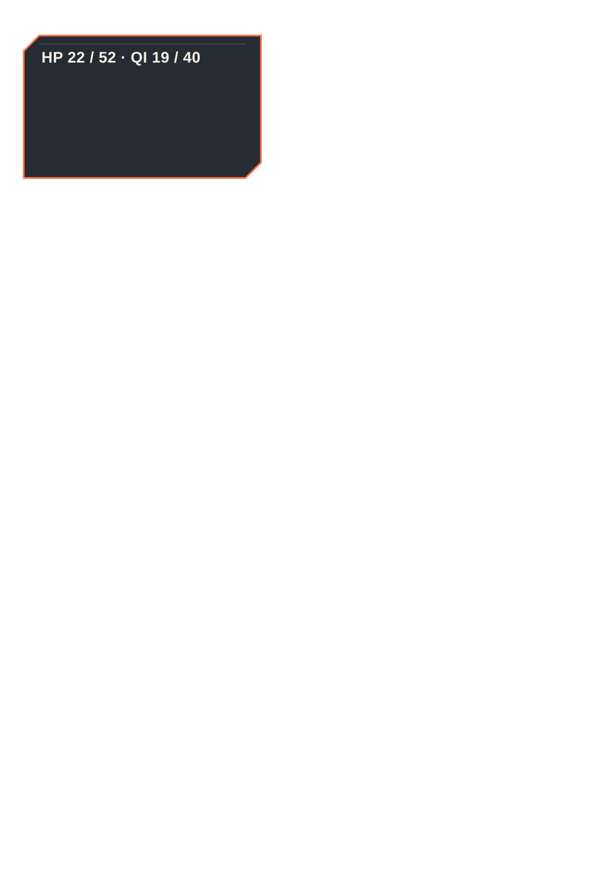
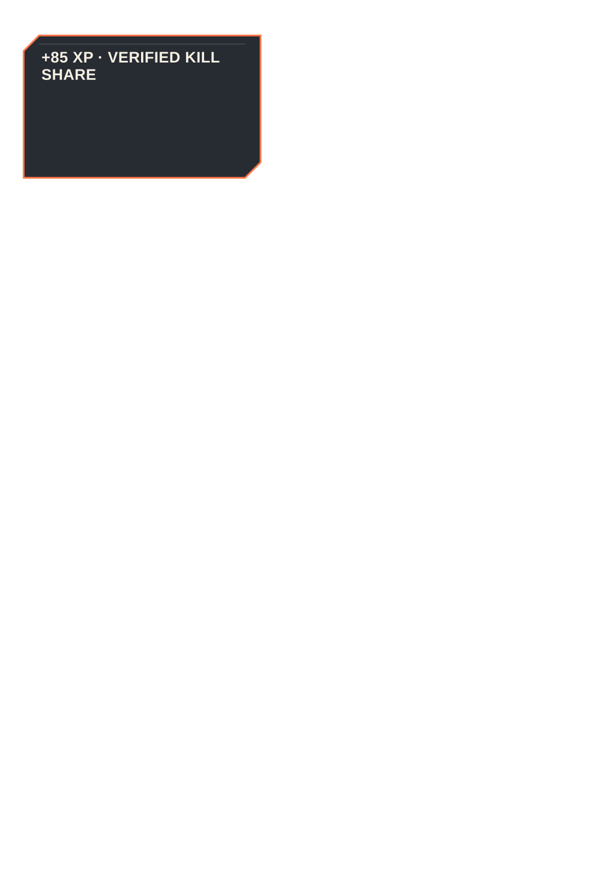
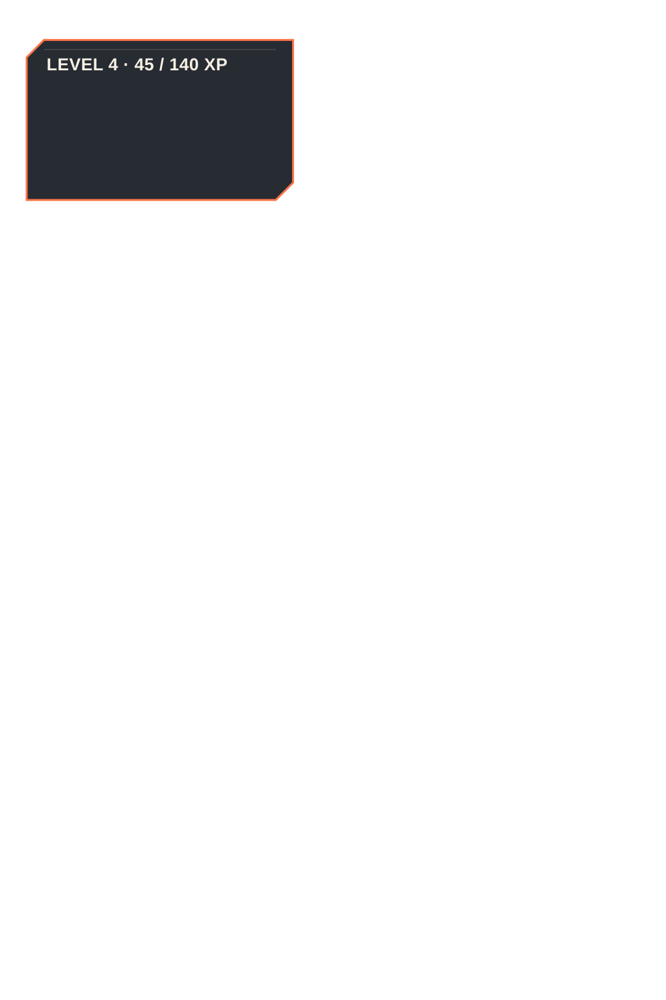

CH01 premium vertical slice
Action reader
8 panels · source art remains separate from deterministic vector lettering and UI.









CH01 premium vertical slice
8 panels · source art remains separate from deterministic vector lettering and UI.



